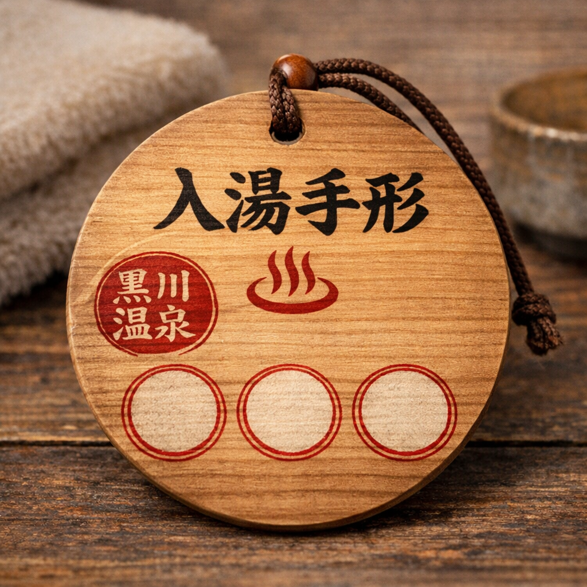

自然に囲まれた露天風呂では、
四季折々の景色を眺めながらゆったりと湯浴みをお楽しみいただけます。
春は新緑、夏は涼やかな風、秋は紅葉、冬は雪景色。
季節ごとに異なる表情を見せる自然とともに、心安らぐひとときをお過ごしください。

露天風呂
自然に囲まれた開放的な露天風呂。
四季折々の景色とともに、やわらかな湯のぬくもりをゆったりとご堪能いただけます。

夜の温泉
夜にはやさしい灯りがともり、昼とは異なる幻想的な雰囲気に包まれます。
静かな時間の中で、心ゆくまで温泉をお楽しみください。
炭酸水素塩泉
やわらかな湯ざわりが特徴で、「美人の湯」とも呼ばれる泉質です。
肌の古い角質をやさしく洗い流し、湯上がりはしっとりとなめらかな肌へと導きます。
神経痛 / 筋肉痛 / 関節痛 / 冷え性 / 疲労回復 / 健康増進 など
体の芯から温まり、日頃の疲れをゆっくりと癒してくれます。

立ち寄り湯のご案内
黒川温泉では、温泉街にある25ヶ所の旅館の露天風呂を巡ることができる
「入湯手形」をご利用いただけます。
1枚の手形で、お好きな露天風呂を3ヶ所までお楽しみいただけます。
また、3ヶ所のうち1ヶ所はお土産店や飲食店でのご利用も可能です。
当館でも、立ち寄り湯のお客様に黒川温泉入湯手形をご利用いただけます。
ご宿泊のお客様は、館内の温泉を自由にご利用いただけます。
※表示料金は消費税・入湯税込みです。
入浴料
大人：700円
子ども：300円